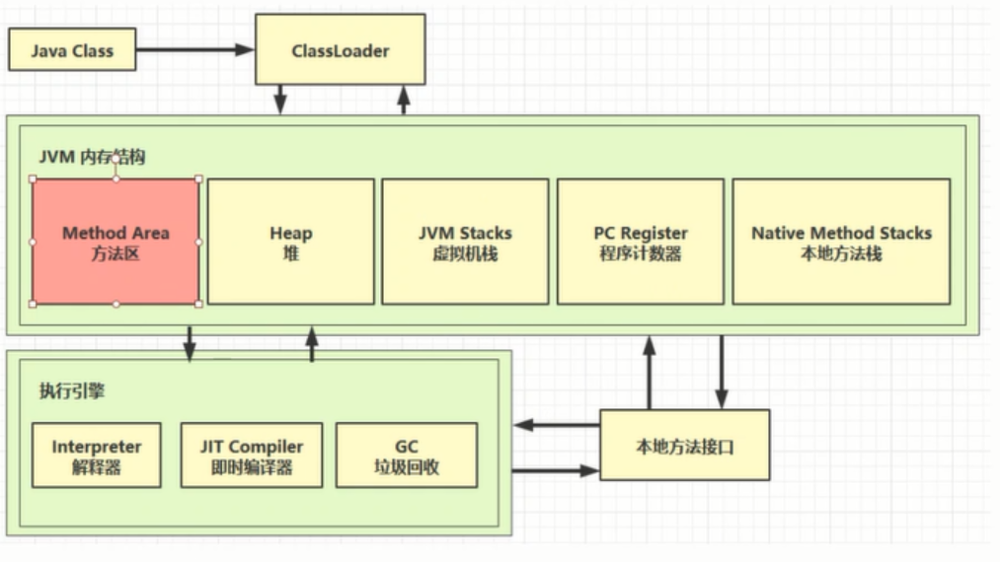

JVM内存结构：
1、程序计数器；
2、虚拟机栈；
3、本地方法区；
4、堆；
5、方法区。

第一部分：程序计数器：
java代码执行顺序：java源代码-（编译器）-->二进制字节码-（JVM）-->机器码
编译器：在jdk中
解释器：在JVM中
程序计数器（物理上是CPU中的寄存器）的作用：记住下一条jvm指令的执行地址。

程序计数器的特点：
线程私有的（每个线程都有自己的程序计数器）；
第二部分：虚拟机栈
定义：每个线程运行时所需要的内存，称为虚拟机栈；
每个栈由多个栈帧组成，对应着每次方法调用时所占的内存；
每个线程只能有一个活动栈帧，对应着当前正在执行的那个方法。
问题辨析：
1、垃圾回收是否涉及栈内存？
不需要，垃圾回收针对的是堆内存。
2、栈内存分配越大越好吗？
不是，每个栈内存分配的越大，机器上最大并发执行的线程数目会变小，栈内存越大，方法递归调用的次数可以越多。
3、方法内的局部变量是否是线程安全的？
是的，因为局部变量是存放在栈中的，每个线程会分配一个栈内存，因此不需要考虑线程安全问题。全局变量是线程共享的，需要考虑线程安全问题。
特殊情况：引用数据类型的局部变量作为返回值返回了，逃离了方法的作用范围，需要考虑线程安全问题。
栈内存溢出：
1、栈帧过多（递归调用）；
2、栈帧过大（单个方法过大，一般不会出现）；
idea设置栈内存大小：
Run/Debug Configurations --->Configuration-->VM options -->-Xss256k
线程运行诊断：
案例1：cpu占用过多
定位：1、用 top定位哪个进程对cpu的占用过高
2、ps H -eo pid,tid,%cpu|grep 进程id(用ps命令进一步定位是哪个线程引起的CPU占用过高)
3、jstack 进程id
4、根据线程id找到有问题的线程编号，进一步解决问题。
案例二：程序迟迟得不到结果
可能原因：死锁
第三部分：本地方法栈
作用：执行本地方法，C++代码
例如：native关键字。
第四部分：堆
Heap堆：通过 new 关键字，创建对象都会使用堆内存
特点：1、它是线程共享的，堆中的对象都需要考虑线程安全问题。
2、有垃圾回收机制。
垃圾回收机制：对象作为垃圾的条件是：没有引用指向该对象。
堆内存溢出：
控制JVM最大虚拟机参数： Run/Debug Configurations --->Configuration-->VM options -->-Xmx8m(默认为4G)
堆内存诊断：
1、jps工具：查看当前系统中有哪些java进程
Terminal-->jps->jmap -heap 进程号(查看堆内存的占用)
2、jmap工具：查看堆内存占用的情况
3、jconsole工具：图形界面的，多功能的检测工具，可以连续的检测
Terminal-->jconsole
案例：垃圾回收多次之后，内存占用率依然很高。
命令：jvisualvm（可以查看内存情况的快照，并且还可以查找类的占用内存的情况）--> Dump

第五部分：方法区
定义：存储类的信息，成员方法，构造方法，成员变量。
特点：线程共享；
在虚拟机启动时被创建；


元空间内存溢出：
IDEA设置元空间大小：
Run/Debug Configurations --->Configuration-->VM options -->-XX:MaxMetaspaceSize=8m
场景：
spring，mybatis等等框架使用动态代理编程，产生大量的代理类的字节码文件。
运行时常量池：
二进制字节码（类的基本信息，常量池，类方法定义，包含了虚拟机指令）
指令：javap -v HelloWorld.class（反编译类的字节码文件）
常量池：就是一张表，虚拟机指令根据这张常量表找到要执行的类名，方法名，参数类型，字面量等信息。
运行时常量池：常量池是 *.class文件中的，当该类被加载，它的常量池信息就会放入运行时常量池，并把里面的符号地址变为真实的地址。
面试题：（考察常量池与串池的关系） 
StringTable StringTable 底层是hashtable
public class Demol{
//常量池中的信息，都会被加载到运行时常量池中，这时a b ab 都是常量池中的符号，还没有变为 java字符串对象
执行方法时，会把 a"符号"变为字符串对象。并将"a"放入到
StringTable["a","b","ab"] StringTable 底层是hashtable 结构，不能扩容
//
public static void main(String args[]){
String s1="a";
String s2="b";
String s3="ab";
String s4=s1+s2;//new StringBuilder().append("a").append("b").toString(),并把"ab"放入串池
String s5="a"+"b";//javac 在编译期间的优化，结果已经在编译期间确定为"ab".
----
}
}
{"a","b"}
String s=new String("a")+new String("b");//new String("ab")
// new String("a") new String("b") new String("ab")存放在堆中
Strings6=s.intern;//将这个字符串对象尝试放入串池，如果没有则放入，有就不放入，最后把串池中的对象返回。

StringTable位置证明：
使jdk1.6的串池溢出：报错：java.lang.OutOfMemoryError:PermGen space(永久代内存溢出)
使jdk1.8的串池溢出：报错：
java.lang.OutOfMemoryError:GC overhead limit exceeded(GC错误)
使用命令：
java.lang.OutOfMemoryError:java heap space
StringTable垃圾回收：没有引用指向的String对象会被回收
StringTable 性能调优：
哈希表原理：
调优：1、参数：-XX:StringTableSime=桶个数
2、考虑将字符串对象是否入池（操作大量的字符串，且字符串存在重复，可以考虑将字符串入池）
6、直接内存（Direct Memory）
常见于NIO操作时，用于数据缓冲区；
分配回收成本较高，但读写性能高；
不受JVM内存回收管理。
案例：
读取磁盘文件 
directBuffer 效率高的原因：
使用io

使用directBuffer：

区别：directBuffer下java 代码可以直接使用 操作系统分配的内存（直接内存）。
IO下的java代码不能直接使用JVM之外的内存，数据需要先存到系统缓冲区，然后到java缓冲区，最后才进入内存。
直接内存溢出：
直接内存的释放原理：
ByteBuffer底层工作流程：
Unsafe unsafe=getUnsafe();
//分配内存,base 记录分配内存的地址
long base=unsafe.allocteMemory(_1Gb);
// 释放内存
unsafe.freeMemory(long);

禁用显示回收对直接内存的影响：
-xx:+DisableExplicitGC
System.gc();//显示垃圾回收，Full GC （比较影响性能，不仅回收新生代，还会回收老年代）
加上该参数后，程序中的System.gc();//显示的垃圾回收就失效了
ByteBuffer只有等到真正垃圾回收产生时，才会被回收。直接内存可能会长时间得不到释放。
解决办法：
unsafe.freeMemory(long);
//使用完直接内存后对其进行手动释放，不要等到守护线程释放。